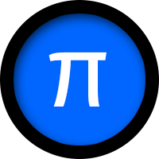
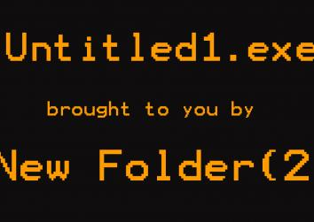
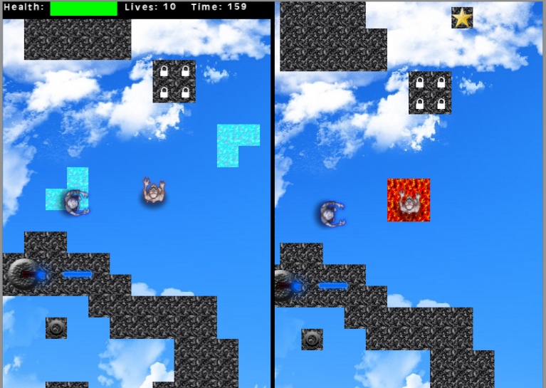
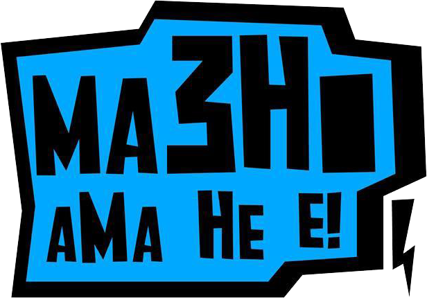

I respond to every email.
martinpetkovski@email.com
Computer languages I'm interested in
Geek gibberish about how this is calculated :
 Yellow bar means discontinuous. (ad-hoc use)
Yellow bar means discontinuous. (ad-hoc use)Green bar means continuous.
JSON
FL Studio
Stuff
WTO Imager
WTO imager is an image service that combines functionalities from both Imgur, Instagram and other similar services. The abbreviation WTO stands for Workshop Team One. This project was made as a part of workshops created by the college I'm studying at - the Faculty of Informatics and Computer Technologies in Bitola, Macedonia and the company Seavus. The project is open source and available at GitHub. All the code is written by me.
Features: Uploading images // Adding tags to images // Voting on images // Sorting images by several filters // Searching images // Commenting on images // Voting on comments // ...
Technologies used: Java, Spring, Hibernate, Maven, MySQL, JSP, HTML, CSS, JavaScript, JQuery.
Features: Uploading images // Adding tags to images // Voting on images // Sorting images by several filters // Searching images // Commenting on images // Voting on comments // ...
Technologies used: Java, Spring, Hibernate, Maven, MySQL, JSP, HTML, CSS, JavaScript, JQuery.
Staklo Records
Staklo Records is a web site for an independent music label where users can contribute to the creation of music. It's made out of scratch without using any CMS or Frameworks whatsoever. Currently there are no release versions. Contributions on GitHub are open.
Features: Full CRUD // News // Artists // Releases // Events // Users // Ladder for users // Contributions
Technologies used: PHP5, HTML, CSS, MySQL, JavaScript, JQuery.
Features: Full CRUD // News // Artists // Releases // Events // Users // Ladder for users // Contributions
Technologies used: PHP5, HTML, CSS, MySQL, JavaScript, JQuery.
Pi Meta Search Engine
"Pi" is a meta search engine I wrote in 2013 for a highscool competition in web programming. It won first prize with maximum number of points. I've released it as open source as I'm not planning on developing it any further. It's not optimized and it has some security issuses.
Features: Searching through a variety of search engines // Search history for each user // Quick switch between search engines // Google autocomplete integration // Multi-language support
Technologies used: PHP, HTML, CSS, MySQL, JavaScript, JQuery, Ajax.
Features: Searching through a variety of search engines // Search history for each user // Quick switch between search engines // Google autocomplete integration // Multi-language support
Technologies used: PHP, HTML, CSS, MySQL, JavaScript, JQuery, Ajax.
Untitled1.exe
A game about choices. Try to get past the first level, or don't. It's your call. In the first level you are a golfer and you have to hit something in order to go to the second level. In the second level you are an aviator and you have to fly in the toruses. Passing the final torus triggers the wake up from the dream. This game was created on the Global Game Jam in 2015 in Bitola, Macedonia.
Things I worked on: Game Design // Golfer animation and mechanics // Doors animation // Ball mechanics // Triggers
Technologies used: C# in Unity game engine
Things I worked on: Game Design // Golfer animation and mechanics // Doors animation // Ball mechanics // Triggers
Technologies used: C# in Unity game engine
Wait For Meeee!!!!
In one word the game is a split-screen-co-op-top-down-platformer. So you better grab a friend if you're gonna play it, as playing it alone is no fun. You should know that both players have to step on a checkpoint in order to activate it, and also that both players need to step to the end portal in order to go through. One player only sees a subset of platforms. The red player can only see red platforms and the blue player can only see blue platforms. Both players have to cooperate in order to step on the end portal which leads to the next level. This game was created on the Global Game Jam in 2014 in Bitola, Macedonia.
Things I worked on: Game Design // Player and NPC mechanics // NPC AI // Player and NPC animation (jumping, shadows ...) // Various game mechanics
Technologies used: GML in GameMaker
Things I worked on: Game Design // Player and NPC mechanics // NPC AI // Player and NPC animation (jumping, shadows ...) // Various game mechanics
Technologies used: GML in GameMaker
Band: Ma3Ho, aMa He e
I was the guitarist of a local shoegaze band. I use a lot of pedals like fuzzes(big muffs), delays(digitech) and reverbs.